FJKW012C
WLAN-Bewässerungssteuerung
- Versorgung
- 4 × AA
- Druck
- 1–8 bar
- Durchfluss
- 500–1700 l/h
- Schutzart
- IP68
Die Sino Nexvia UG ist europäischer Vertriebspartner von Ningbo Fujin, einem Hersteller von Bewässerungstechnik seit 2008. Wir beliefern Großhandel, Gartenfachhandel und Fachbetriebe mit dem Fujin-Sortiment und betreuen Angebote, Bestellungen und Service von Nürnberg aus.
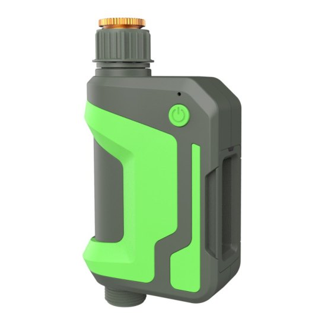
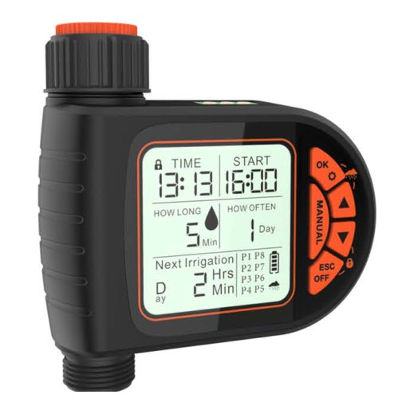
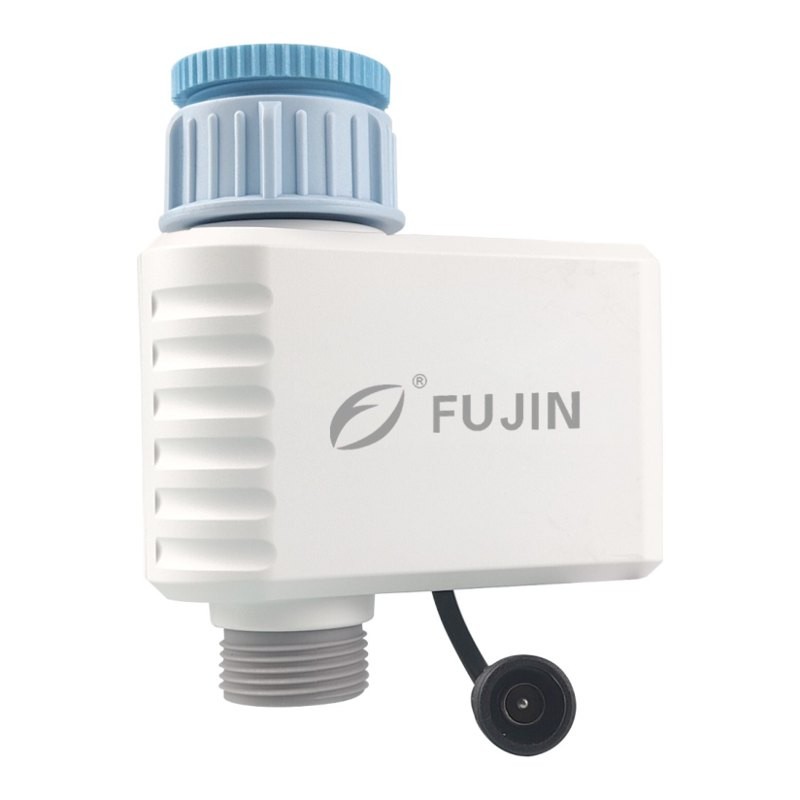
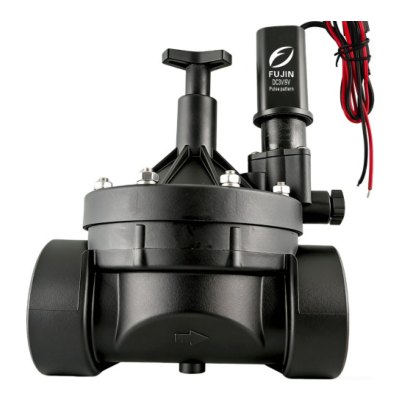
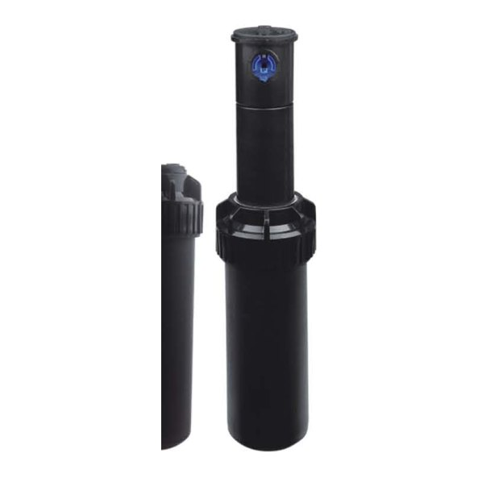
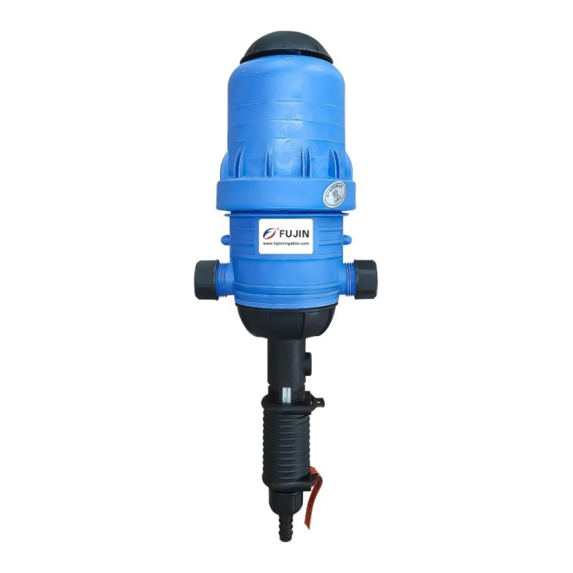
Eine Auswahl aus dem Fujin-Katalog. Den Gesamtkatalog mit allen Modellen und technischen Daten senden wir Ihnen auf Anfrage zu.
Batteriebetriebene Hahn- und Ventilsteuerungen, bedient über die Smart-Life-App.
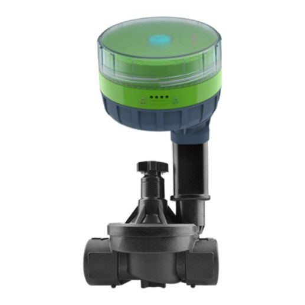
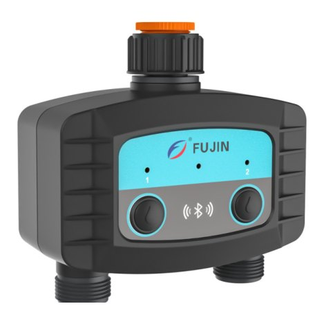
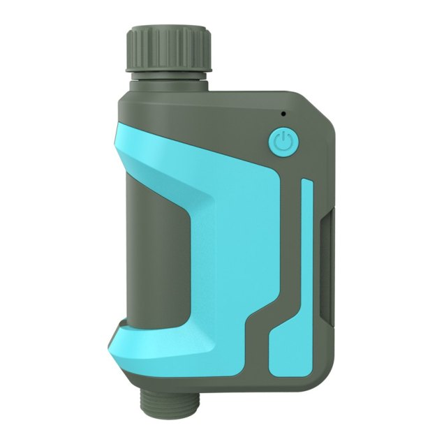
Eigenständige Zeitschaltuhren für den Wasserhahn, ohne App und Netzwerk.
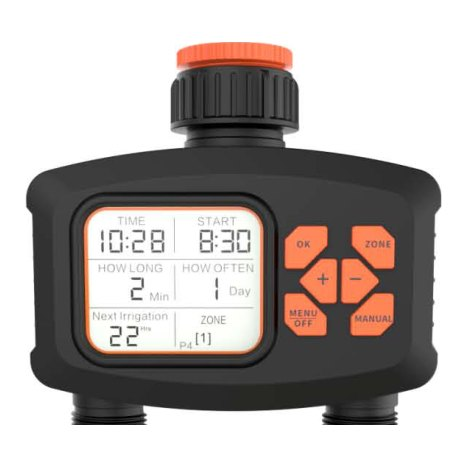
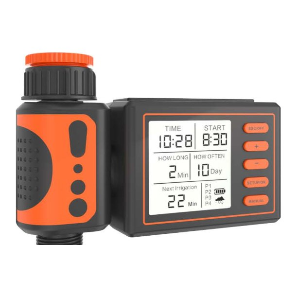
Magnet-, Impuls- und Motorventile für Steuerungen von Fujin und anderen Herstellern.
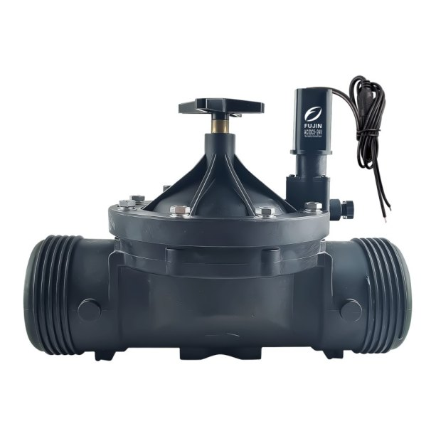
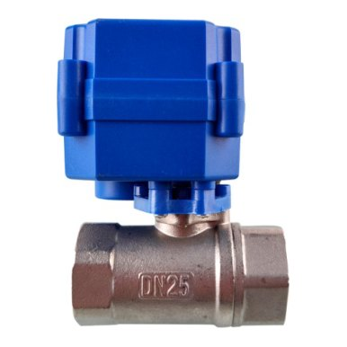
Für größere Anlagen: Parks, Sportplätze, Agrarbetriebe und Grundstücke ohne WLAN.
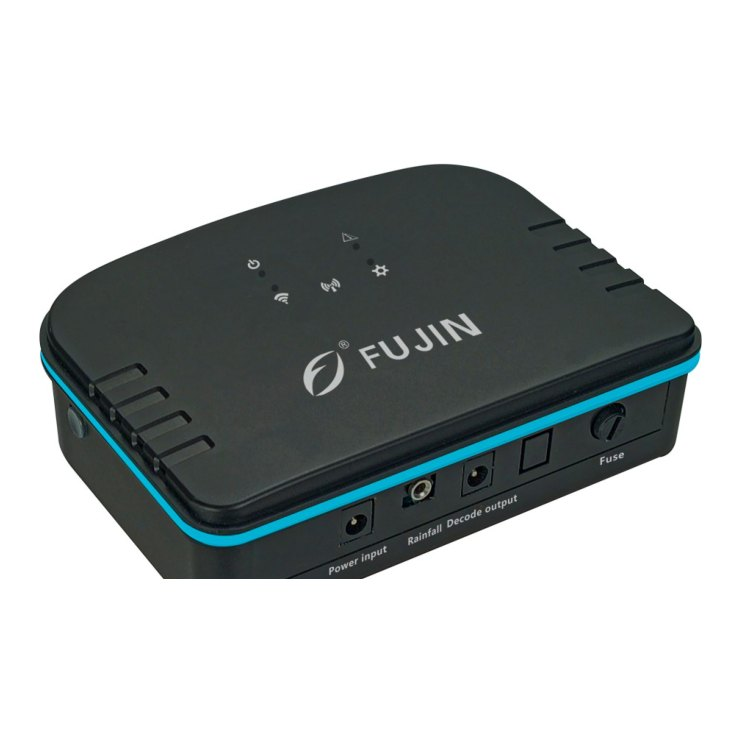
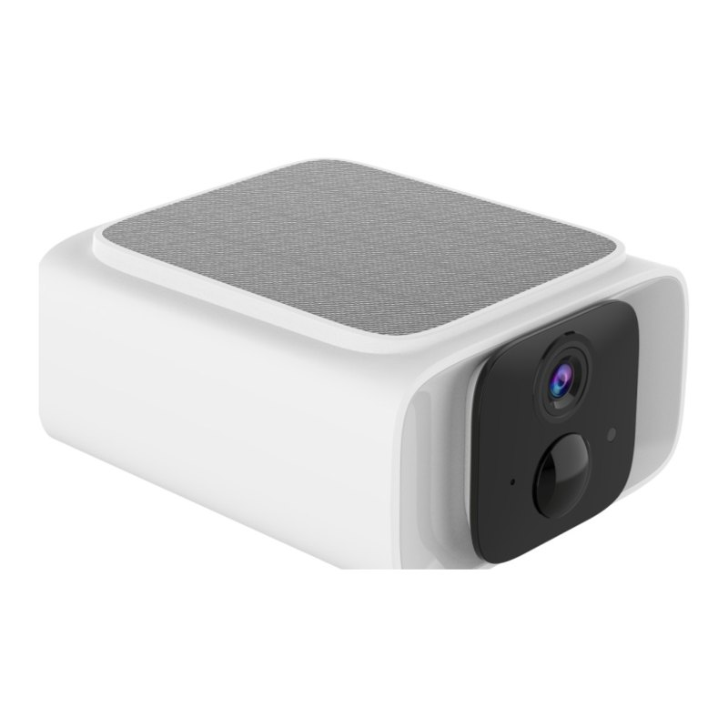
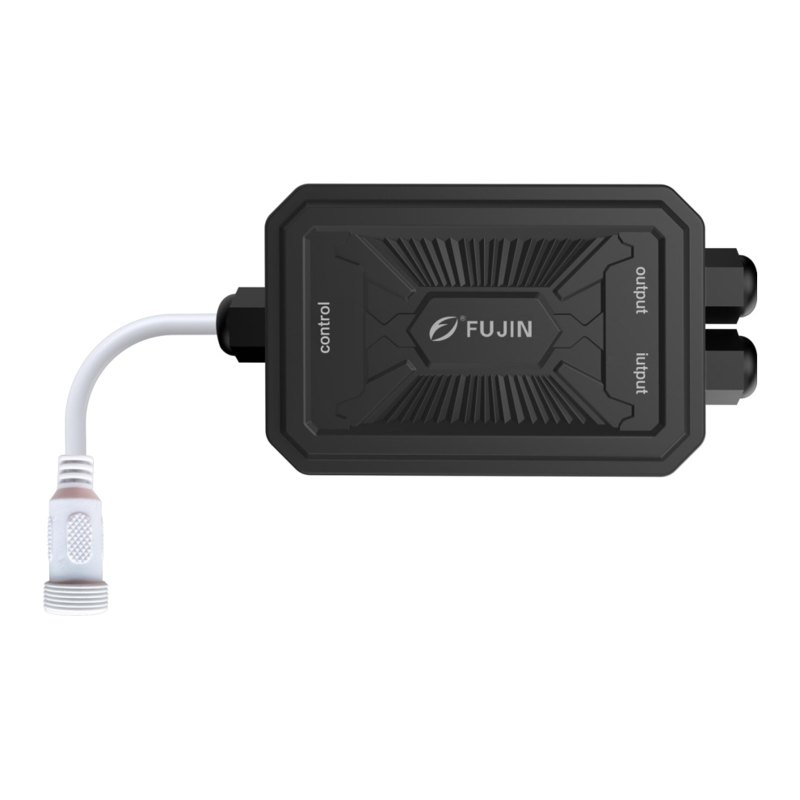
Versenkregner, Sprühdüsen, Gartenregner und ein Stecksystem für die Mikrobewässerung.
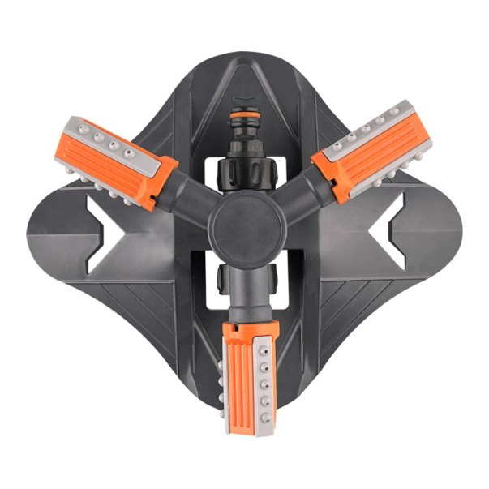
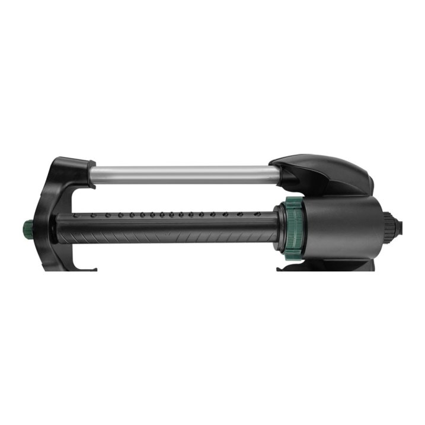
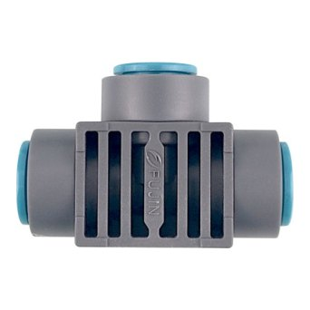
Düngerdosierung und Durchflussmessung für Gewächshäuser und landwirtschaftliche Bewässerung.
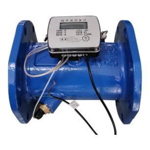
Sie suchen ein bestimmtes Modell, eine Sonderausführung oder Ihre eigene Marke? Schicken Sie uns Ihre Anforderung, wir klären sie direkt mit dem Werk.
Anfrage sendenIhr Vertragspartner ist ein deutsches Unternehmen. Um das Werk kümmern wir uns.
Ausschließlich für gewerbliche Kunden.
Die Ningbo Fujin Garden & Irrigation Equipment Co., Ltd. wurde 2008 in Yuyao in der Provinz Zhejiang gegründet. Das eigene Entwicklungsteam deckt Elektronik, Software, Maschinenbau und Produktdesign ab.
Fujin-Produkte werden in Hausgärten, im Garten- und Landschaftsbau, in Gewächshäusern, in der Landwirtschaft und auf kommunalen Grünflächen eingesetzt.
| Unternehmen | Ningbo Fujin Garden & Irrigation Equipment Co., Ltd. |
|---|---|
| Gegründet | 2008 |
| Standort | Yuyao, Ningbo, Zhejiang, China |
| Patente | 54, davon 2 Erfindungs- und 19 Gebrauchsmusterpatente |
| Software-Urheberrechte | 6 |
| Vertriebspartner Europa | Sino Nexvia UG (haftungsbeschränkt), Nürnberg |
Schreiben Sie uns oder rufen Sie direkt an.
Für ein Angebot nennen Sie uns bitte die Modellnummern oder den Einsatzzweck, die Menge und das Lieferland.